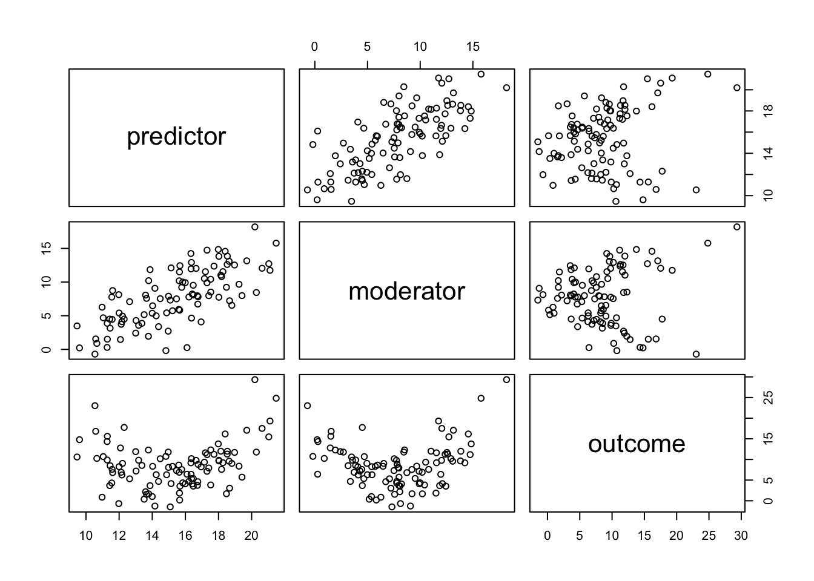
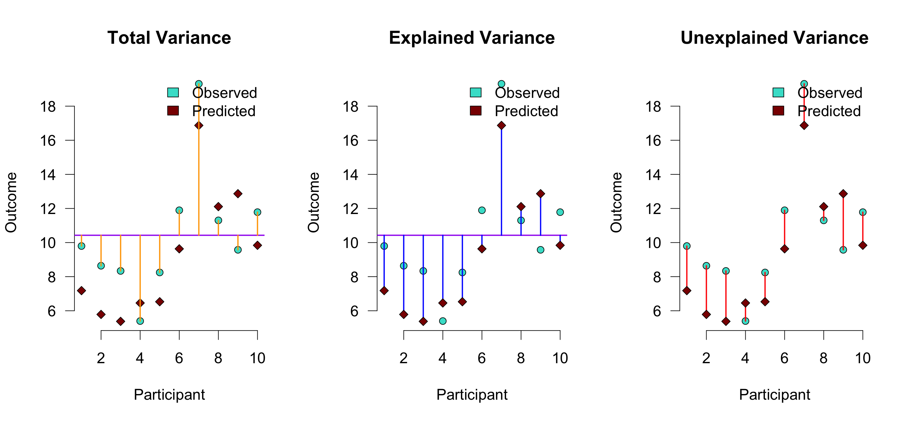
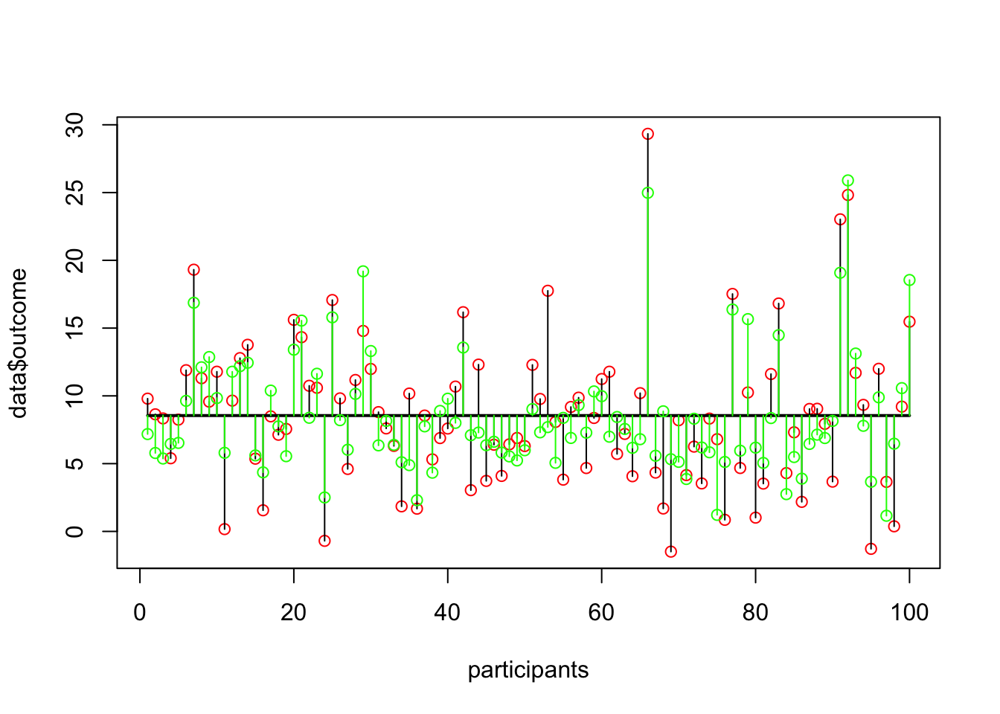

set.seed(283) ## Mooie seed :-)
predictor <- rnorm(100, 0, 3)
moderator <- predictor + rnorm(100, 0, 3) ## multicollineariteit
error <- rnorm(100, 0, 3) ## error
intercept <- 5
outcome <- intercept + .5*predictor +
-.4*moderator +
.4*predictor*moderator +
error25. Moderation
Moderation
Moderation
In statistics and regression analysis, moderation occurs when the relationship between two variables depends on a third variable. The third variable is referred to as the moderator variable or simply the moderator. The effect of a moderating variable is characterized statistically as an interaction.
Source WIKIPEDIA
Model
\(\definecolor{red}{RGB}{255,0,0} \definecolor{black}{RGB}{0,0,0} \color{black}Out_i = b_0 + b_1 Pred_i + b_2 Mod_i + \color{red}b_3 Pred_i \times Mod_i \color{black}+ \epsilon_i\)

Example
Video games are among the favourite online activities for young people: two-thirds of 5–16-year-olds have their own video games console, and 88% of boys aged 8–15 own at least one games console. Although playing violent video games can enhance visuospatial acuity, visual memory, probabilistic inference, and mental rotation, compared to games such as Tetris, these games have also been linked to increased aggression in youths Another predictor of aggression and conduct problems is callous-unemotional traits such as lack of guilt, lack of empathy, and callous use of others for personal gain.
Imagine a scientist wanted to look at the relationship between playing violent video games such as Grand Theft Auto, MadWorld and Manhunt and aggression. She gathered data from 442 youths. She measured their aggressive behaviour, callous unemotional traits, and the number of hours per week they play video games.
Source: Field 11.3.1
Simulate data
Mean un centring
predictor <- predictor + 15
moderator <- moderator + 7
data <- data.frame(predictor, moderator, outcome)
head(data) predictor moderator outcome
1 18.02061 7.746939 9.797006
2 15.60117 5.937336 8.638962
3 14.02281 6.477516 8.336367
4 16.47405 9.520816 5.396567
5 11.99709 5.404452 8.246535
6 13.00026 2.415985 11.893936View data
Correlations
cor(data) predictor moderator outcome
predictor 1.0000000 0.7220140 0.2151668
moderator 0.7220140 1.0000000 0.1094856
outcome 0.2151668 0.1094856 1.0000000Scatterplots

The following objects are masked _by_ .GlobalEnv:
moderator, outcome, predictor3D plot
Take it for a spin (does not work on tablet)
1 SD planes
quantiles <- as.vector(quantile(moderator,seq(.1,.9,.1)))
sds <- c(mean(moderator)+(sd(moderator)*c(-1,0,1)))Fit model
#fit2 <- lm(outcome ~ predictor + moderator)
fit <- lm(outcome ~ predictor + moderator + predictor*moderator); summary(fit)
Call:
lm(formula = outcome ~ predictor + moderator + predictor * moderator)
Residuals:
Min 1Q Median 3Q Max
-7.1725 -2.0186 0.2975 2.2995 10.0602
Coefficients:
Estimate Std. Error t value Pr(>|t|)
(Intercept) 40.70870 3.38786 12.016 < 2e-16 ***
predictor -2.18586 0.24825 -8.805 5.47e-14 ***
moderator -5.91087 0.42821 -13.804 < 2e-16 ***
predictor:moderator 0.37000 0.02649 13.967 < 2e-16 ***
---
Signif. codes: 0 '***' 0.001 '**' 0.01 '*' 0.05 '.' 0.1 ' ' 1
Residual standard error: 3.086 on 96 degrees of freedom
Multiple R-squared: 0.6869, Adjusted R-squared: 0.6771
F-statistic: 70.2 on 3 and 96 DF, p-value: < 2.2e-16Regression equation
\(\definecolor{red}{RGB}{255,0,0} \definecolor{black}{RGB}{0,0,0} \color{black}\widehat{Out_i} = b_0 + b_1 Pred_i + b_2 Mod_i + \color{red}b_3 Pred_i \times Mod_i \color{black}\)
\(\definecolor{red}{RGB}{255,0,0} \definecolor{black}{RGB}{0,0,0} \color{black}\widehat{Out_i} = 40.71 + -2.19 \times Pred_i + -5.91 \times Mod_i + \color{red} 0.37 \times Pred_i \times Mod_i \color{black}\)
regeq <- function(model, predictor, moderator) {
fit$coefficients[1] +
fit$coefficients[2]*predictor +
fit$coefficients[3]*moderator +
fit$coefficients[4]*predictor*moderator
}
x.pre <- seq(10,21,length.out=30)
y.mod <- seq( 0,16,length.out=30)
z.pre <- outer(x.pre, y.mod, FUN='regeq', model=fit)Expected surface
Expected values
data$exp <- fit$fitted.valuesExplained variance


End
Contact